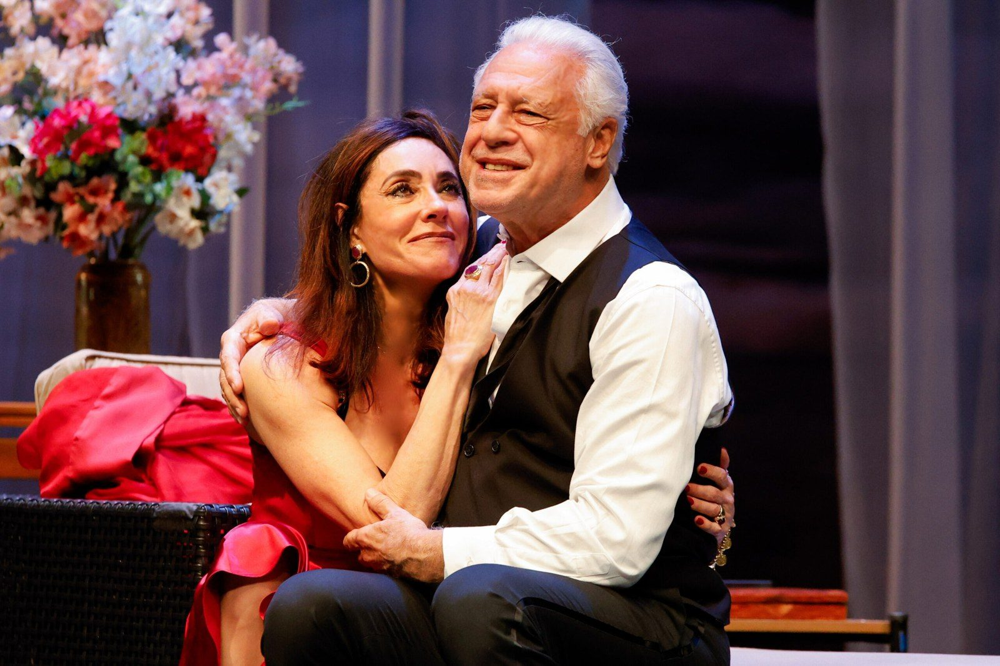
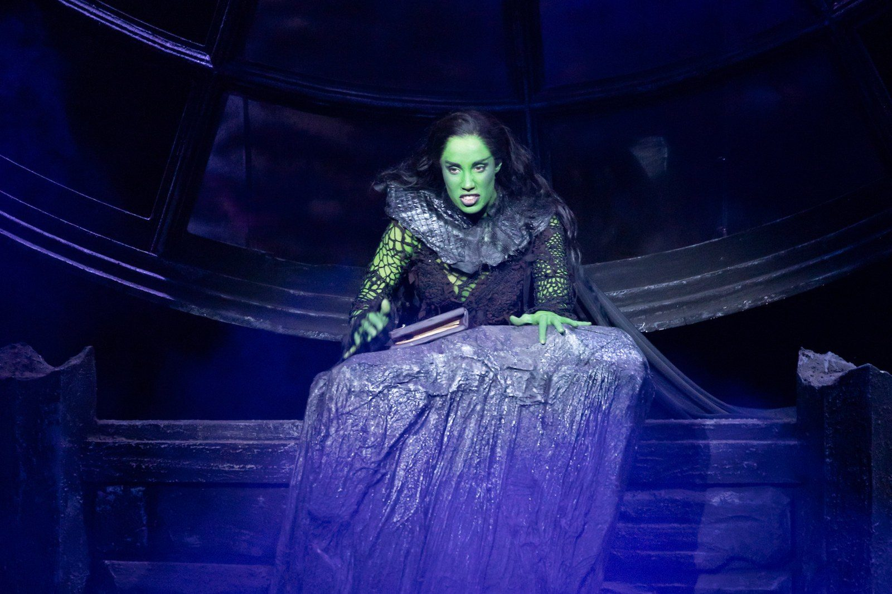

O que fazer no fim de semana no Rio de Janeiro (23 a 26/07)

O feriado escolar de julho deixou a agenda carioca cheia em todas as zonas da cidade. Entre quinta-feira e domingo, o Rio recebe a estreia mais aguardada do semestre no Leblon, segue com a bruxa verde sobrevoando a plateia na Barra da Tijuca, abre espaço para o improviso no VillageMall e se despede de uma criação da companhia brasileira de teatro no Centro.
A curadoria da Redação Foyer escolheu um espetáculo para cada dia, de quinta a domingo, todos na cidade do Rio de Janeiro. Cada indicação vem com serviço completo e link oficial de compra. Vale correr: parte das sessões deste fim de semana já opera com poucos lugares.
Quinta 23/07: Fagundes e Torloni juntos pela primeira vez no palco
A quinta-feira é de estreia no Leblon. Dois de Nós chega ao Teatro AXIA Casa Grande reunindo Antonio Fagundes e Christiane Torloni em cena pela primeira vez, depois de mais de quarenta anos de carreiras que se cruzaram na televisão, mas nunca no teatro. O texto de Gustavo Pinheiro coloca dois casais num quarto de hotel, onde a conversa vai expondo segredos, desejos e frustrações acumuladas. Thiago Fragoso e Alexandra Martins completam o elenco, sob direção de José Possi Neto.
Antes de aportar no Rio, a montagem passou por Portugal e por treze cidades brasileiras, com público acima de duzentas mil pessoas, trajetória que o FOYER acompanhou desde o anúncio da turnê. A temporada carioca é longa, vai até 1º de novembro, mas a noite de estreia tem peso próprio para quem gosta de ver história acontecendo.

Serviço. Dois de Nós, no Teatro AXIA Casa Grande (Av. Afrânio de Melo Franco, 290, Leblon). Quinta a sábado, 20h; domingo, 17h. Temporada de 23 de julho a 1º de novembro. Ingressos de R$ 160 (balcão 3) a R$ 230 (plateia vip), à venda na Eventim e na bilheteria do teatro. Classificação: 12 anos.
Sexta 24/07: a noite em que Elphaba voa sobre a Barra
Na sexta, o programa é o fenômeno da temporada. Wicked faz sua primeira temporada carioca na sala Bibi Ferreira da Cidade das Artes, na Barra da Tijuca, depois de dez anos de história no Brasil e mais de um milhão de espectadores desde 2016. Myra Ruiz volta a pintar a pele de verde como Elphaba e Fabi Bang retoma Glinda, papéis que as duas defendem desde a primeira montagem brasileira.
O espetáculo conta o que aconteceu em Oz antes da chegada de Dorothy e explica como a futura Bruxa Má do Oeste ganhou essa fama. São três horas de espetáculo, com quinze minutos de intervalo, e efeitos de voo que justificam a fila. A temporada segue apenas até 9 de agosto e alguns setores esgotaram antes mesmo do anúncio do elenco: sobram poucos fins de semana.

Serviço. Wicked, na Cidade das Artes, sala Bibi Ferreira (Av. das Américas, 5.300, Barra da Tijuca). Sexta, 20h; o musical também tem sessões de quarta e quinta às 20h, sábado às 15h e 19h30 e domingo às 14h e 18h30. Temporada até 9 de agosto. Ingressos de R$ 50 a R$ 400, à venda no Sympla e na bilheteria oficial (terça a domingo, das 13h às 19h). Duração: 180 minutos, com intervalo.
Sábado 25/07: os Barbixas transformam sugestão da plateia em cena
O sábado é do riso sem rede de proteção. A Cia. Barbixas de Humor apresenta Improvável no Teatro Multiplan, dentro do VillageMall, às 20h30. Criado em 2007 pelo trio Anderson Bizzocchi, Daniel Nascimento e Elidio Sanna, o formato transformou o improviso teatral em programa popular no Brasil: nada está escrito, e as cenas nascem na hora, a partir das sugestões gritadas pelo público.
Quem já viu sabe que nenhuma sessão repete a anterior, e é justamente esse risco que sustenta o jogo. Para quem quer apresentar teatro a adolescentes ou a amigos resistentes ao palco, o espetáculo costuma ser porta de entrada eficiente. Se o sábado lotar, há sessão extra no domingo, às 19h30.
Serviço. Improvável, com a Cia. Barbixas de Humor, no Teatro Multiplan (VillageMall, Av. das Américas, 3.900, piso SS1, Barra da Tijuca). Sábado, 25 de julho, 20h30; domingo, 26 de julho, 19h30. Ingressos a partir de R$ 50, à venda no Sympla. Classificação: 14 anos.
Domingo 26/07: última chance de ver História no CCBB
O domingo fecha o fim de semana com despedida. História, criação que marca os 25 anos da companhia brasileira de teatro, faz sua última apresentação no Teatro II do CCBB, no Centro, às 18h. Dirigida por Marcio Abreu, a peça costura relatos, cartas e poemas para pensar a história do país a partir das vozes que os registros oficiais costumam apagar, em diálogo com o pensamento da pesquisadora Leda Maria Martins e com a voz de Waly Salomão.
"A História é um tecido infinito de vozes múltiplas", afirma Marcio Abreu, diretor do espetáculo, ao explicar por que a dramaturgia abre mão de uma narrativa linear.
Carolina Virgüez, Rafael Bacelar e Felipe Storino dividem o palco em 70 minutos de encenação. Com ingresso a R$ 30, é também o programa mais barato desta lista, na medida para fechar o fim de semana sem pesar no bolso.
Serviço. História, no CCBB Rio de Janeiro, Teatro II (Rua Primeiro de Março, 66, Centro). Domingo, 26 de julho, 18h, última sessão da temporada. Ingressos a R$ 30 (inteira) e R$ 15 (meia), com 50% de desconto para clientes Ourocard, à venda no site Ingressos CCBB e na bilheteria. Duração: 70 minutos. Classificação: 18 anos.
Com estreia badalada, megamusical, improviso e despedida de temporada, o roteiro cobre quatro cantos da cidade: Leblon, Barra, VillageMall e Centro. Antes de sair, confirme os horários nos canais oficiais de cada casa; em julho, sessões extras e mudanças pontuais acontecem sem muito aviso.